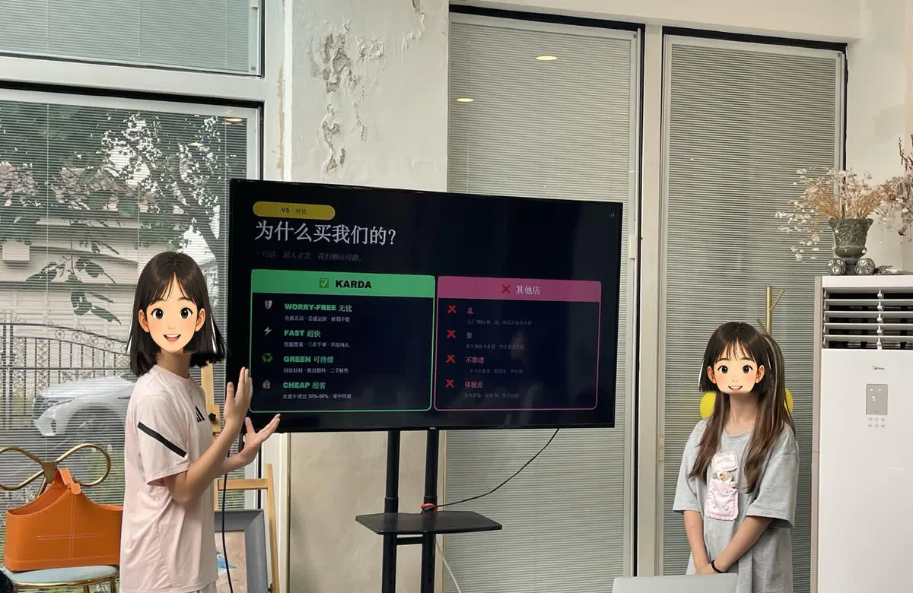
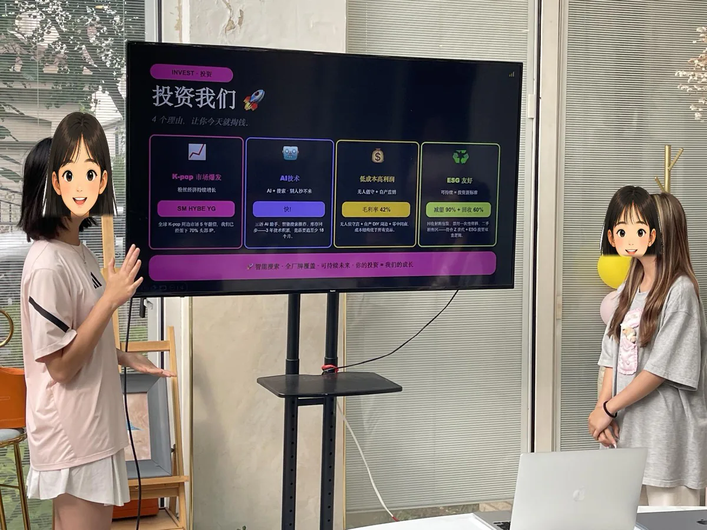

共情力
先聽見別人真正遇到的事。

五力理念
孩子當然要學會使用新的 AI 科技；更重要的是，面對任何新工具時，都能理解人、把問題說清楚、做出想法、判斷結果，並帶著團隊把一件事完成。這就是我們最看重的五力。
先聽見別人真正遇到的事。
把問題想清楚、說清楚。
把新想法做成第一版作品。
不照單全收 AI 給出的答案。
和團隊把一件事做到最後。
課程方法
少年CEO 的重點不是把每一組帶到同一個答案，而是讓孩子把真實興趣與使用者需求連起來：先找方向，再做第一版，讓別人試用，最後把產品故事講清楚。
01｜找方向
孩子觀察真實需要、聽使用者的聲音，再決定產品要做什麼，而不是照著一張標準答案卡完成作業。
02｜做第一版
用 AI 協作與前端頁面把想法做出來，讓使用者可以輸入、點擊、看到結果，而不只是看一張概念海報。
03｜講清楚
孩子說明產品幫誰、怎樣使用、帶來什麼結果；聽見回饋後，再決定下一版要改哪裡。
3 天課程路徑
每天都有新的方法，也有足夠的動手時間。孩子不是只聽課，而是把一個問題一步一步做成可以打開、可以體驗、可以講清楚的網頁產品。
Day 1｜找方向
Day 2｜做產品
Day 3｜路演作品
北京順義首場營｜真實案例
首場營最後形成三個獨立的路演項目。題材不同，但每一組都從自己真心喜歡的運動、偶像 IP 或 K-Pop 周邊體驗出發，投入三天把第一版做出來，再把作品講給家長聽。
家長回饋
「孩子結營以後還一直對 AI 保持很大的興趣，在家裡自己研究，熱情很高，還希望能繼續跟老師學習。」
「老師，你們這個課能不能一直上下去？我們真的很喜歡，孩子熱情非常高。」
家長看見的不只是三天裡完成的一次展示，也看見孩子把熱愛延續到結營以後，願意繼續自己研究、繼續學習。
Watch students pitch in English
北京順義站現場片段：兩位學生在白板前介紹項目思路、使用者問題和產品方案。英文原聲保留，學生臉部已用卡通頭像遮擋。



榮譽時刻
首場營的榮譽不只屬於最後的作品，也記錄孩子在提問、創造、判斷與協作裡拿出的真實行動。

個人榮譽
把創造力做成看得見的作品

團隊榮譽
創新協作和商業實踐，都值得被看見
三天路演後，團隊把自己喜歡的題做成產品，也把協作和表達帶到台前。
現場回顧
從互相測試、修改第一版，到路演時介紹自己的產品，首場營留下的是孩子把想法做完、講清楚的真實瞬間。
北京順義首場營現場回顧
從真實問題出發，用 AI 做出產品原型，再站上台講清楚。
少年CEO AI 創業營

產品演示
站到螢幕前，把使用者怎樣使用講清楚。

現場協作
圍在一起試作品、改原型。
團隊成果
結營不是交作業，是一起完成一次真實路演。
課程主理人

香港國際教育交流協會有限公司創始人
中國教育技術協會 AI 領域專家
曾任 8,000+ 人教育集團 CTO
曾任好未來（NYSE: TAL）事業部 IT 負責人
清華軟件學院畢業，25 年教育科技行業經驗，也是一位在 AI 時代陪孩子成長的家長。負責少年CEO AI 創業營的課程設計與產品體系建設，目前每期課程均由武寧帶領團隊親自交付。
家長與合作夥伴常問
不需要。孩子會用自然語言和 AI 協作，再用瀏覽器端前端技術完成第一版。課程更看重提問、判斷、修改和表達。
可以。共同流程一致，但任務深度、團隊責任和作品要求會按年齡與能力調整，讓每個孩子都有清楚的參與位置。
一個可以打開、可以互動的網頁產品，一次由孩子自己完成的路演，以及他在五種能力上的真實行動和成長。
AI 可以幫忙調研、整理和生成初稿，但產品做什麼、結果是否合理、下一版怎樣改善，都要由孩子自己決定。
暑期開展完整的 3 天假期營；其他時間可配合學校安排校內工作坊，也可開展週末營，再按孩子年齡、場地及合作方需求確認形式。
合作夥伴
我們與培訓機構、營地、學校社群及城市合作夥伴共同開展營期。課程不是交付一份講義，而是把課堂流程、教師支持與作品展示組合成可落地的營期經驗。
3 天 PBL 流程、學生任務與路演展示結構。
一起對齊課堂節奏、提問方式與作品標準。
暑期開展 3 天假期營；其他時間可與學校或機構合作開展校內工作坊及週末營。
開始對話
家長、學校社群、營地與機構夥伴都可以在這裡留下資料。我們會再一起了解合適的課程形式。